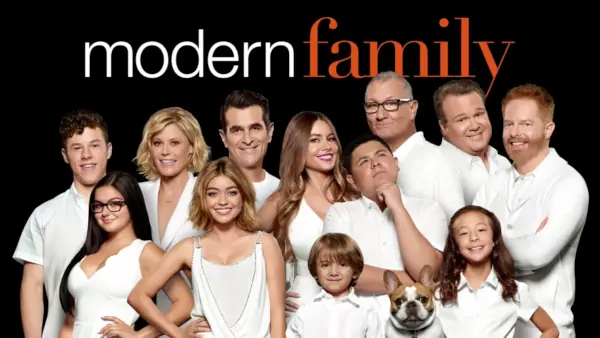

Modern Family

La serie sigue la vida de Jay Pritchett y su familia, todos los
cuales viven en Los Ángeles. La familia de Jay Pritchett incluye a
su segunda esposa y su hijastro, así como a sus dos hijos adultos;
sus esposos e hijos y nietos.